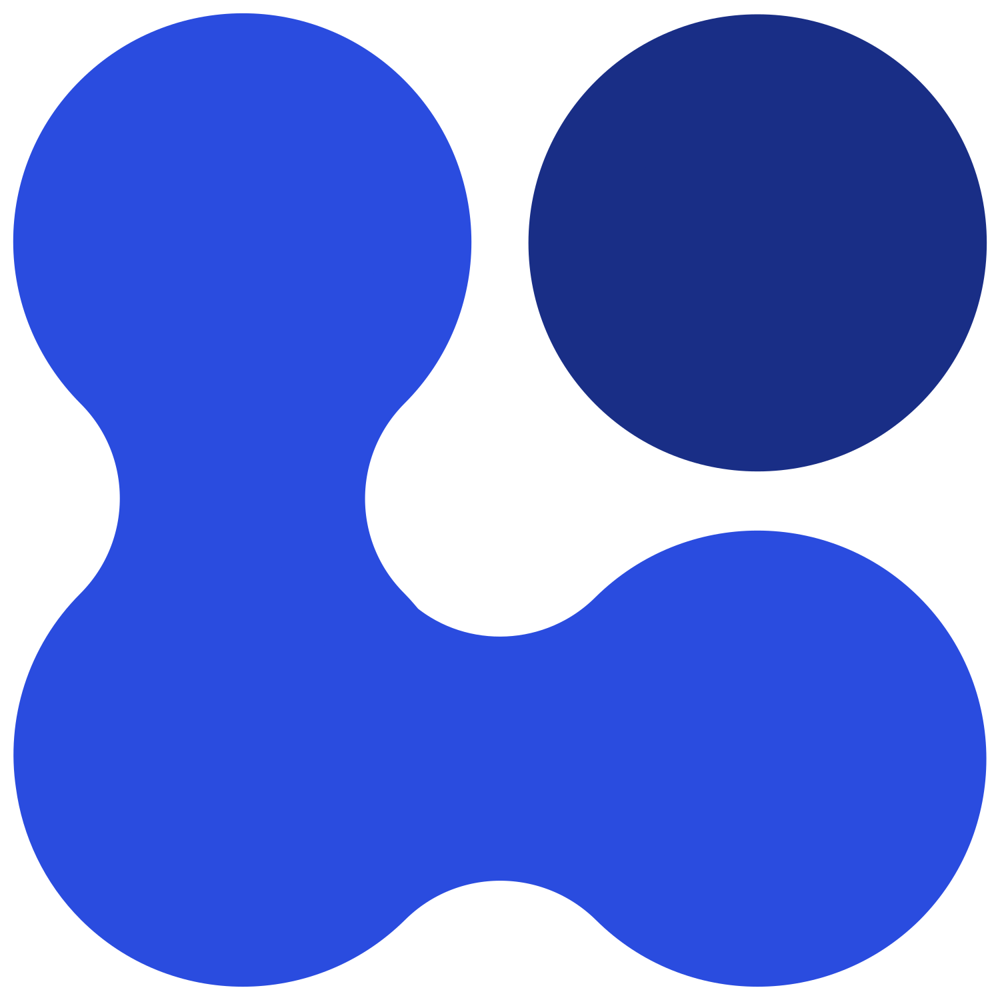
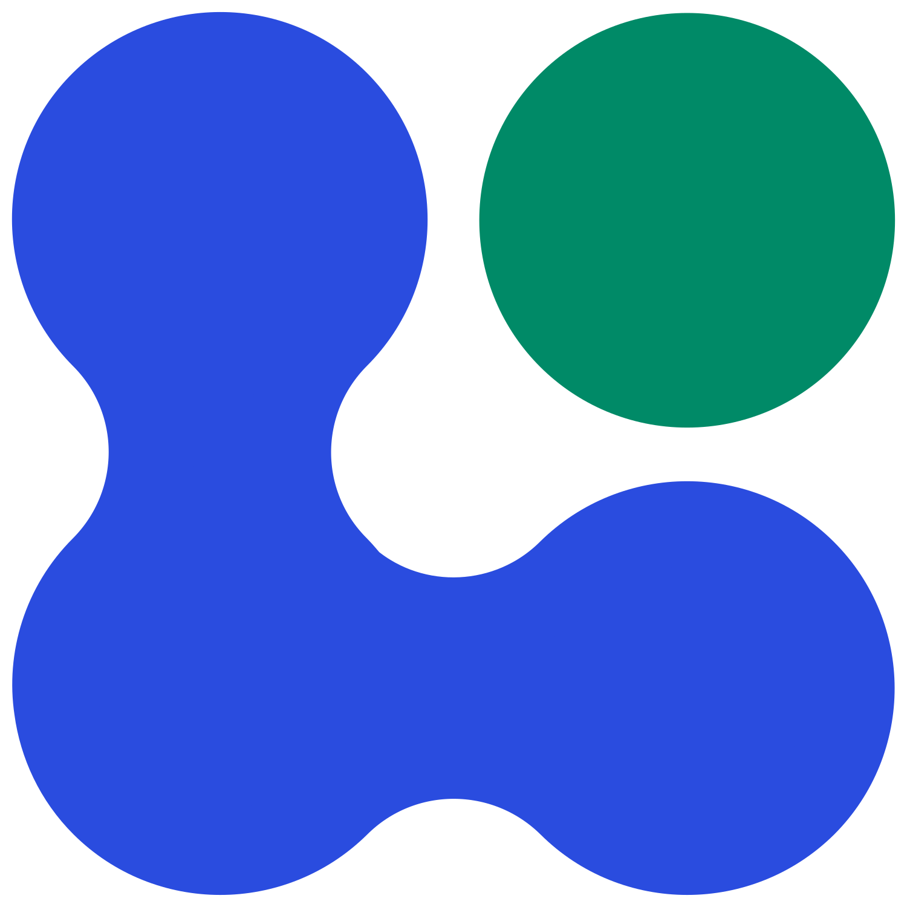
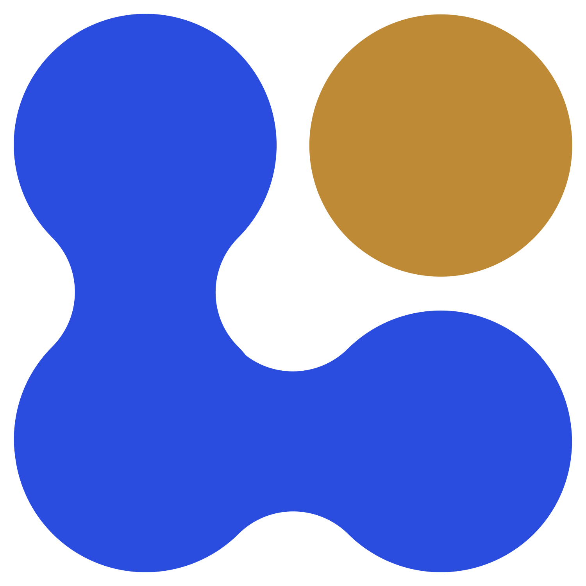

menu
NOMAD
Product
keyboard_arrow_down
Core platform

NOMAD Central Platform
Free, open service to explore, manage, and publish materials data

NOMAD Oasis
Self-hosted deployment for groups that need full control of their data

NOMAD CAMELS
Desktop software for lab instrument control and experiment automation
NOMAD for
person
Researchers
Find existing data, publish your own, and cite it with DOIs
apartment
Organizations & networks
Evaluate, deploy, and govern NOMAD for your group, CRC, network, or institution
Develop
keyboard_arrow_down
code
Developer overview
Aggregation hub linking to all developer resources
extension
NOMAD software ecosystem
Plugins, dependent packages, and official software built on NOMAD
menu_book
Developer documentation
arrow_outward
Plugins, schemas, APIs, and extending the platform
build
Plugin development
arrow_outward
Guides and templates for building NOMAD plugins
schema
Schema guide
arrow_outward
Defining and extending schemas for your data
Deploy
keyboard_arrow_down
Get started
rocket_launch
Deployment overview
arrow_outward
What deployment means, effort required, Central vs. Oasis comparison
download
Installation guide
arrow_outward
Step-by-step setup for your own NOMAD Oasis instance
tune
Configuration
arrow_outward
Customize your deployment for your group's workflows
how_to_reg
Register your Oasis
arrow_outward
Register your Oasis installation with the central NOMAD service
Resources
Commercial Services
arrow_outward
Managed deployment and support through Glaide
Resources
keyboard_arrow_down
Get started
school
Upload & publish
arrow_outward
The step-by-step tutorial for your first upload and DOI
help_outline
FAQ
Quick answers to common questions
support_agent
Support
Get help from the NOMAD team and the wider community
Reference
data_object
Simulation codes
Supported codes, main files, and additional files read by NOMAD
science
Experimental support
Supported techniques, instruments, and experimental file formats
description
User documentation
arrow_outward
Searching, uploading, and publishing on NOMAD
article
Oasis documentation
arrow_outward
Self-hosted deployment, configuration, and operations
About
keyboard_arrow_down
The project
info
NOMAD Lab
The history of the project, from 2014 to today
hub
FAIRmat
arrow_outward
The consortium behind NOMAD, part of Germany's NFDI initiative
format_quote
Cite NOMAD
Papers, citations, and how to reference NOMAD in your work
Get involved
campaign
News & events
arrow_outward
Latest updates, workshops, and community events
work_outline
Open positions
arrow_outward
Join the team building NOMAD and FAIRmat
700+
Ask questions and share ideas with 700+ researchers
Open NOMAD
404
Page not found
The page you were looking for does not exist. It may have moved, been renamed, or you may have followed a broken link.
Go to homepage
arrow_forward
Contact support
arrow_forward